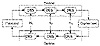
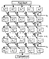

Click Here!


|
Click Here! |
|
| |
|
|
|
To access the contents, click the chapter and section titles.
Applied Cryptography, Second Edition: Protocols, Algorthms, and Source Code in C (cloth)
12.5 The Real Design CriteriaAfter differential cryptanalysis became public, IBM published the design criteria for the S-boxes and the P-box [373,374]. The criteria for the S-boxes are:
The criteria for the P-box are:
The paper goes on to discuss the criteria. Generating S-boxes is pretty easy today, but was a complicated task in the early 1970s. Tuchman has been quoted as saying that they ran computer programs for months cooking up the S-boxes. 12.6 DES VariantsMultiple DES Some DES implementations use triple-DES (see Figure 12.10) [55]. Since DES is not a group, then the resultant ciphertext is much harder to break using exhaustive search: 2112 attempts instead of 256 attempts. See Section 15.2 for more details. 
DES with Independent Subkeys Another variation is to use a different subkey for each round, instead of generating them from a single 56-bit key [851]. Since 48 key bits are used in each of 16 rounds, this means that the key length for this variant is 768 bits. This variant would drastically increase the difficulty of a brute-force attack against the algorithm; that attack would have a complexity of 2768. However, a meet-in-the-middle attack (see Section 15.1) would be possible. This would reduce the complexity of attack to 2384; still long enough for any conceivable security needs. Although independent subkeys foil linear cryptanalysis, this variant is susceptible to differential cryptanalysis and can be broken with 261 chosen plaintexts (see Table 12.15) [167,172]. It would seem that any modification of the key schedule cannot make DES much stronger. DESX DESX is a DES variant from RSA Data Security, Inc. that has been included in the MailSafe electronic mail security program since 1986 and the BSAFE toolkit since 1987. DESX uses a technique called whitening (see Section 15.6) to obscure the inputs and outputs to DES. In addition to a 56-bit DES key, DESX has an additional 64-bit whitening key. These 64 bits are XORed to the plaintext before the first round of DES. An additional 64 bits, computed as a one-way function of the entire 120-bit DES key, is XORed to the ciphertext after the last round [155]. Whitening makes DESX much stronger than DES against a brute-force attack; the attack requires (2120)/n operations with n known plaintexts. It also improves security against differential and linear cryptanalysis; the attacks require 261 chosen plaintexts and 260 known plaintexts, respectively [1338]. CRYPT(3) CRYPT(3) is a DES variant found on UNIX systems. It is primarily used as a one-way function for passwords, but sometimes can also be used for encryption. The difference between CRYPT(3) and DES is that CRYPT(3) has a key-dependent expansion permutation with 212 possible permutations. This was done primarily so that off-the-shelf DES chips could not be used to construct a hardware password-cracker. Generalized DES Generalized DES (GDES) was designed both to speed up DES and to strengthen the algorithm [1381,1382]. The overall block size increases while the amount of computation remains constant. Figure 12.11 is a block diagram of GDES. GDES operates on variable-sized blocks of plaintext. Encryption blocks are divided up into q 32-bit sub-blocks; the exact number depends on the total block size (this was variable in the design, but must be fixed for each implementation). In general, q equals the block size divided by 32. Function f is calculated once per round on the right-most block. The result is XORed with all the other parts, which are then rotated to the right. GDES has a variable number of rounds, n. There is a slight modification to the last round, so that the encryption and decryption processes differ only in the order of the subkeys (just like DES). In fact, if q = 2 and n = 16, this is DES. Biham and Shamir [167,168] showed that, using differential cryptanalysis, GDES with q = 8 and n = 16 is breakable with only six chosen plaintexts. If independent subkeys are also used, 16 chosen plaintexts are required. GDES with q = 8 and n = 22 is breakable with 48 chosen plaintexts, and GDES with q = 8 and n = 31 requires only 500,000 chosen plaintexts to break. Even GDES with q = 8 and n = 64 is weaker than DES; 249 chosen plaintexts are required to break it. In fact, any GDES scheme that is faster than DES is also less secure (see Table 12.15). A variant of this scheme recently appeared [1591]. It is probably no more secure than the original GDES. In general, any large block DES variant that is faster than DES is probably also less secure than DES. DES with Alternate S-Boxes Other DES modifications centered around the S-boxes. Some designs made the order of the S-boxes variable. Other designers varied the contents of the S-boxes themselves. Biham and Shamir showed [170,172] that the design of the S-boxes, and even the order of the S-boxes themselves, were optimized against differential cryptanalysis:
The DES S-boxes were not optimized against linear cryptanalysis. There are better S-boxes than the ones that come with DES, but blindly choosing new S-boxes isn’t a good idea. 
Table 12.15 [167,169] lists some modifications to DES and the number of chosen plaintexts required for differential cryptanalysis. One change not listed, combining the left and right halves using addition mod 24 instead of XOR, is 217 times harder to break than DES [689].
|
|
Products | Contact Us | About Us | Privacy | Ad Info | Home
Use of this site is subject to certain Terms & Conditions, Copyright © 1996-1999 EarthWeb Inc. All rights reserved. Reproduction whole or in part in any form or medium without express written permision of EarthWeb is prohibited.
|
){kind=link}
){kind=link}
){kind=link}
){kind=link}